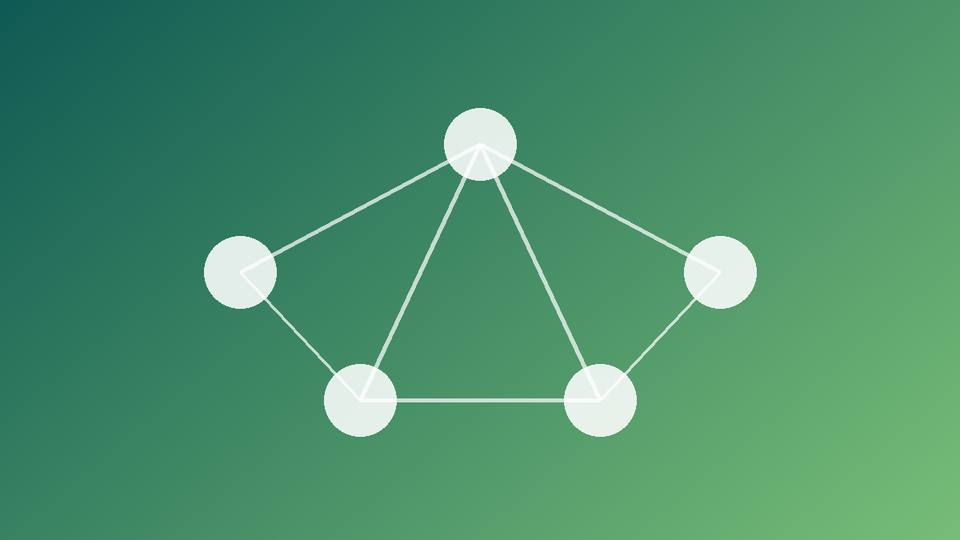

NoSQL: нереляционные базы
Гибкие модели данных для больших объёмов, быстрых записей и меняющейся структуры.

Что значит NoSQL
Термин означает «не только SQL». Такие базы отказываются от жёсткой схемы и часто жертвуют частью гарантий ACID ради скорости и масштабирования на много серверов.
Виды NoSQL-баз
- Документные (MongoDB, CouchDB)
- Хранят JSON-подобные документы. Подходят для каталогов, профилей и контента.
- Ключ-значение (Redis, Memcached)
- Простейшая модель с очень быстрым доступом. Используются для кэша и сессий.
- Колоночные (Cassandra, HBase)
- Рассчитаны на огромные объёмы записей, например метрики и журналы событий.
- Графовые (Neo4j)
- Хранят узлы и связи. Удобны для соцсетей и рекомендательных систем.
Пример документа
{
"_id": "u42",
"name": "Анна",
"roles": ["admin", "editor"],
"address": { "city": "Казань", "zip": "420000" }
}Вложенные данные лежат в одном документе, поэтому для их чтения не нужны соединения таблиц.
Теорема CAP
Распределённая система не может одновременно гарантировать согласованность, доступность и устойчивость к разделению сети. Разные NoSQL-базы делают разный выбор из этих свойств.
Плюсы и минусы NoSQL
Плюсы: гибкая схема, легко добавлять новые поля без миграций, хорошо масштабируется на несколько серверов, высокая скорость записи при больших объёмах данных.
Минусы: сложнее поддерживать целостность данных, обычно нет полноценных JOIN между коллекциями, данные могут временно быть неактуальными на разных серверах (eventual consistency), меньше готовых инструментов для сложной аналитики.